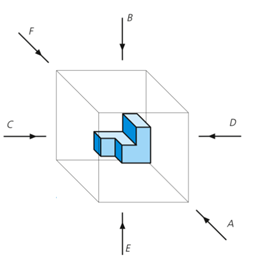

Actividad 1. Sistema Europeo y Americano
“INGENIERÍA DE DISEÑO, MODELADO Y SIMULACIÓN POR COMPUTADORA, CON ENFOQUE EN MANUFACTURA SUSTENTABLE PARA LA INDUSTRIA AUTOMOTRIZ Y AEROESPACIAL”
TEMA 1: VISTAS Y DETALLES
ACTIVIDAD DE APRENDIZAJE 1: “Sistema Americano y Europeo”
COMPETENCIA DE LA ACTIVIDAD: Aplicar los conceptos de vistas y sistemas de proyecciones ortogonales en el contenido de esta unidad, bajo los criterios de las normas y estándares aplicados en la industria automotriz y aeroespacial, con la finalidad de construir la representación de una figura en un sistema normalizado (Sistema Europeo o Americano).
OBJETIVO DE LA ACTIVIDAD: Construir la representación de un sistema ortogonal de vistas (Americano o Europeo) a partir de las vistas principales de una pieza u objeto.
INSTRUCCIONES:
- Buscar una pieza u objeto en un taller, una industria o su hogar.
- Tomar una fotografía de la pieza u objeto de todas sus vistas (como el ejemplo de la figura 1).

Figura 1. Vistas de una pieza. Fuente: (Arrate et al, 2019).
- Las fotografías obtenidas de cada una de las vistas, deben de ser anexadas a la tabla 1.
- Realizar una investigación sobre el funcionamiento básico de la pieza y sus posibles aplicaciones, no olvides agregar referencias en formato APA. Los puedes generar aquí: http://www.cva.itesm.mx/biblioteca/pagina_con_formato_version_oct/apa.htm
- Entregar en tiempo y forma a la dirección de correo electrónico proporcionada por el profesor.
CONTENIDO DEL DOCUMENTO:
- Usar este archivo de Word como elemento base.
- PAGINA 1. Portada (agregar los datos faltantes)
- PAGINA 2 y 3. Instrucciones generales.
- PAGINA 4. Introducción de media cuartilla, letra Arial Narrow 12 interlineado 1.5. El título “INTRODUCCIÓN” centrado y en negritas con letra Arial Narrow 13. Debajo de la introducción incluir la fotografía con vistas. Nombre la fotografía, por ejemplo: Fotografía 1. Rodamiento mecánico (con letra Arial Narrow 11 y en cursivas).
- PAGINA 5. Descripción de la pieza, funcionamiento y aplicaciones (mínimo media cuartilla, máximo una cuartilla). Letra Arial numero 12 interlineado 1.5.
- PAGINA 6. Completar la tabla 1, introduciendo las vistas en las secciones correspondientes. Puedes extender la cantidad de páginas a más de 1.
- PAGINA 7. Con las fotografías capturadas, realizar la representación del Sistema Americano o Europeo. Debajo de la representación poner el símbolo representativo del sistema elegido.
- PENULTIMA PAGINA. Realiza una conclusión en referencia a la elaboración de esta actividad. ¿Qué aportación te deja el completar esta actividad de aprendizaje?
- Debajo de las Conclusiones, agrega las bibliografías y referencias que consultaste en formato APA.
- ULTIMA PAGINA. Cuadro de rubrica de calificación y observaciones.
RUBRICA DE CALIFICACIÓN
|
PUNTOS |
PORCENTAJE |
OBSERVACIONES |
|
Puntualidad |
/5 |
|
|
Cumple con todos los puntos |
/5 |
|
|
Portada con datos correctos |
/5 |
|
|
Introducción |
/5 |
|
|
Fotografía con vistas (OBLIGATORIO) |
/5 |
|
|
Descripción de la pieza u objeto |
/10 |
|
|
Tabla correctamente llenada con las vistas de la pieza |
/25 |
|
|
Representación del Sistema Europeo/Americano |
/30 |
|
|
Conclusiones |
/5 |
|
|
Referencias en APA |
/5 |
|
|
TOTAL |
/100 |
|
NOTA: EN CASO DE NO PODER TOMAR FOTOGRAFÍAS, PUEDE ANEXAR IMÁGENES DE INTERNET.